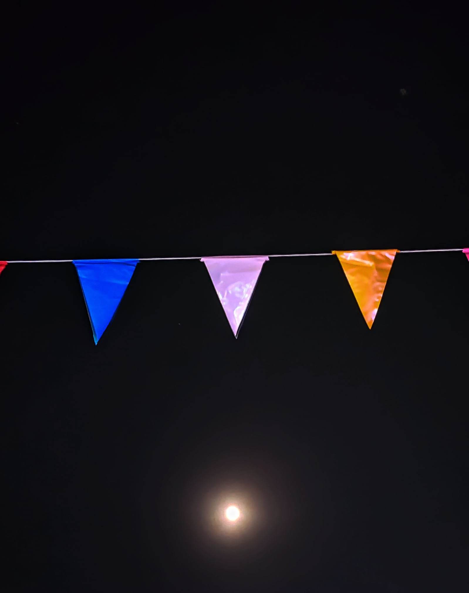
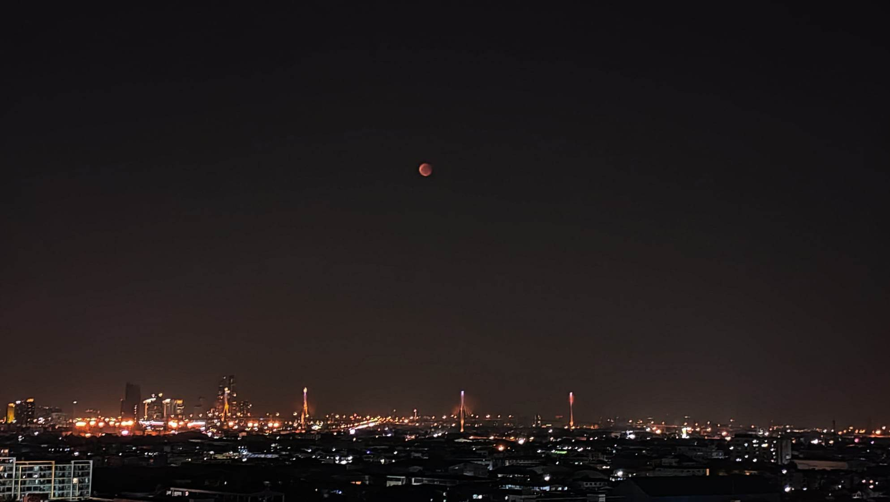
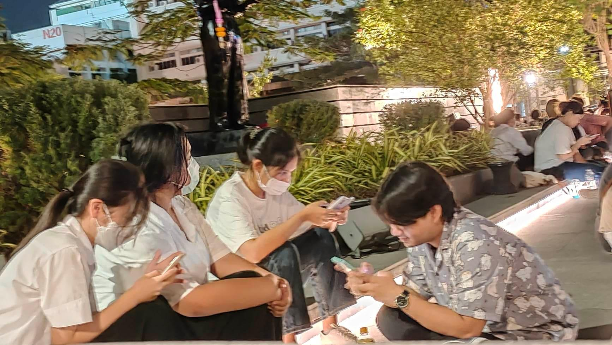

วันที่ 8 พฤศจิกายน 2022 🌕

วันพระจันทร์เต็มดวง หรือวันลอยกระทง เป็นวันที่พลอยแอบตื่นเต้น
เพราะปีนี้มีจันทรุปราคาด้วย
หลังจากดวงจันทร์มืดก็จะมีดวงจันทร์ที่สุกสว่างเข้ามาเติมเต็มล่ะ
พลอยขึ้นไปบนLX จำชั้นไม่ค่อยได้
อาจจะชั้น 11-12
ตอนแรกพลอยเลิกล้มความตั้งใจที่จะดูไปประมาณนึงแล้วล่ะ เพราะว่าดึกแล้ว รอ ประมาณ1ชม.ได้
แต่ก็ยังไม่เห็นดวงจันทร์ จนกระทั่งการรอก็มีความหมาย
ตอนประมาณ18.17 ดวงจันทร์ก็ขึ้นสีแดงขึ้นมาจาง ๆ ให้เห็น พลอยตื่นเต้น ก็เลยเก็บภาพมาหลายรูปเลย น้องสวยมาก

ตอนแรกพลอยกะจะเก็บภาพจนครบจากมืดจนเต็มดวง แต่ปวดแขนมาก ๆ ที่จะถือมือถือ พอครึ่งดวงเลยเลิกถ่าย

ก็ลงไปดูคอนเสิร์ตแล้วก็เจอเพื่อน ๆ ด้วย แต่พลอยแอบไม่กล้าเข้าหาเพื่อน ๆ พลอยเหมือนเห็นเส้นจาง ๆ ที่พลอยกลัว เลยไม่ค่อยได้คุยอะไรกับเพื่อนมาก ก็ไปซื้อของกินในงานมาจะนั่งกิน แต่นกเกือบหมด ได้มาแค่ไข่เจียวราคาแพงที่ไม่มีข้าว แต่มันก็ ไม่เป็นไร
พลอยเอนจอยกับเพลงที่แสดงประมาณนึงเลย วันนั้นพลอยได้คิดและฟังอะไรหลาย ๆ อย่าง จนมันเกิดที่พลอยจะรับได้ จนกลายเป็นความคิดมาก และพลอยไม่สามารถรักษาตัวเองที่มีความสุขไว้ได้ และต้องการจะหนีไปหาที่ที่ตัวเองจะผ่อนคลายได้
แต่สุดท้ายกลายเป็นมีเรื่องที่ทำให้พลอยปลีกตัวไม่ได้ พลอยอดทนเก็บตัวเองที่อ่อนแอไว้โดยตลอด จนมาถึงจุดนึง พลอยไม่โอเคมาก ๆ ถ้ามันมีที่ว่างแค่เพียงเล็กน้อย พลอยก็จะโอเคอยู่แล้ว แต่มันไม่มี พลอยเลยแก้วิธีเศร้าด้วยการโกรธใส่เพื่อนที่ไม่ให้พื้นที่พลอย และกลายเป็นว่าพลอยเหนื่อยมากขึ้นเรื่อย ๆ เพราะเขาไม่ยอมทำตามที่พลอยต้องการง่าย ๆ และเอาแต่ถามว่าพลอยเป็นอะไร ทั้งที่ตอนนั้นพลอยไม่พร้อมจะพูดอะไรเลยสักนิด พลอยเฟลมากเหนื่อยมาก และพอยิ่งเห็นเพื่อนทำท่าเหมือนจะร้องไห้ พลอยยิ่งไม่พอใจ ในตัวเอง
มันเป็นเพราะพลอยหรอ เพราะพลอยเข้มแข็งไม่พอจะเก็บอารมณ์ไว้ เพราะพลอยทำให้เพื่อนรู้สึกแย่ พลอยอยากร้องไห้ พลอยไม่อยากอยู่ตรงนี้ พลอยเหนื่อย พลอย ...พระจันทร์สวยมาก แต่พลอยกลับไม่ยิ้มออกมา